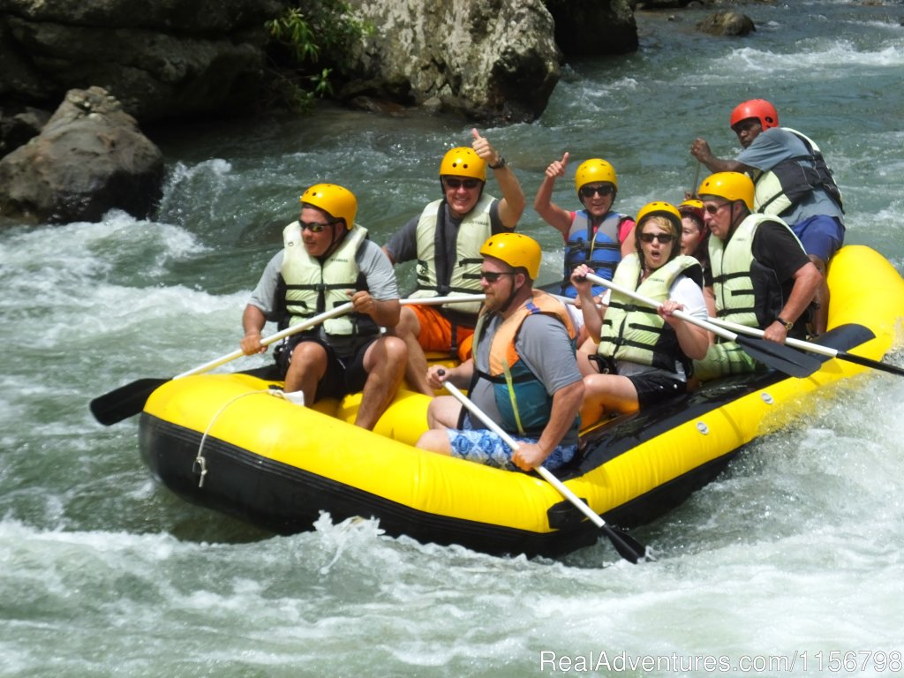

Our mission is to deliver safe, thrilling river experiences for families and paddlers of every level. We focus on safety, training, and unforgettable adventure.
White Water Rafting (WWR)
Safe, guided river adventures — family friendly and unforgettable.
History
Founded in 2015 along Fiji’s wild rivers, WWR started as a small local guiding company with a simple goal: to share the beauty and excitement of our islands with adventurers from near and far. What began with a handful of guides and rafts has grown into a trusted outfitter, known for safety, skilled leadership, and a true Fijian spirit of hospitality.
Today, WWR carries on the tradition of connecting people to the land, the waters, and the culture of Fiji, creating unforgettable journeys for every visitor.